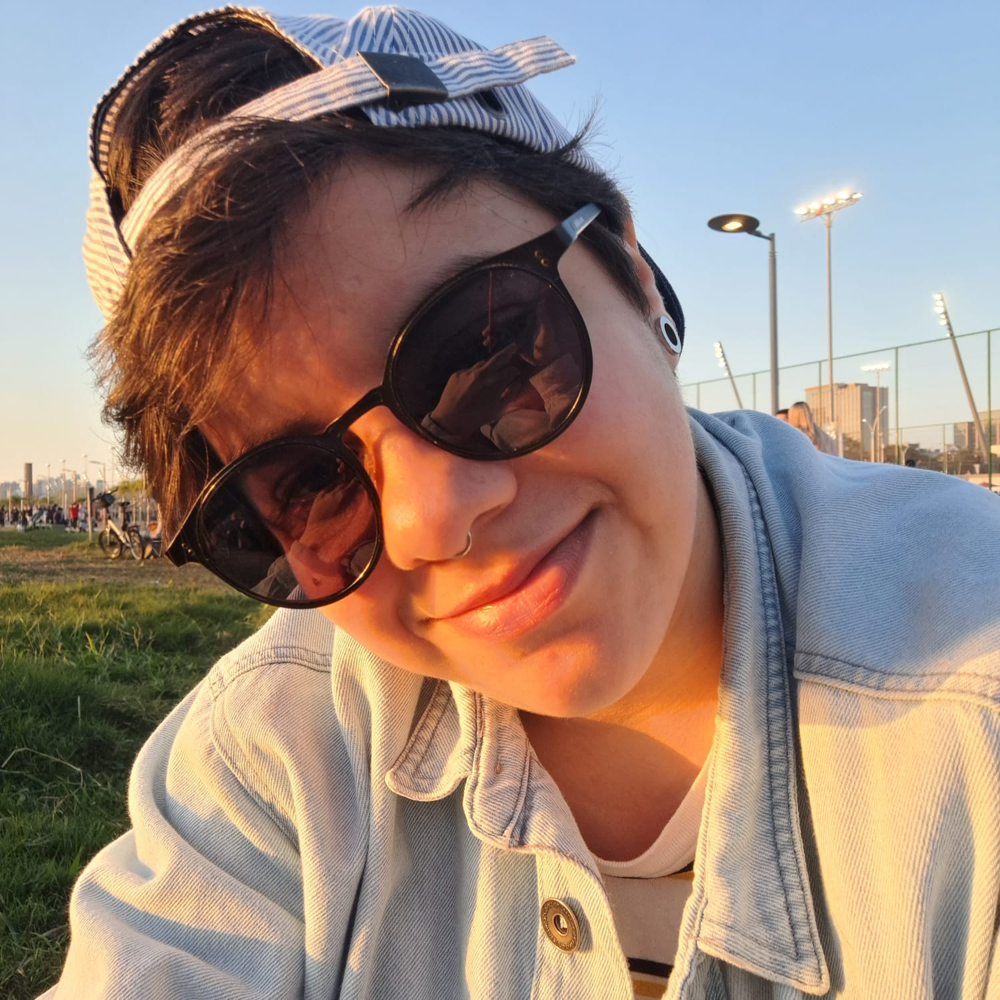
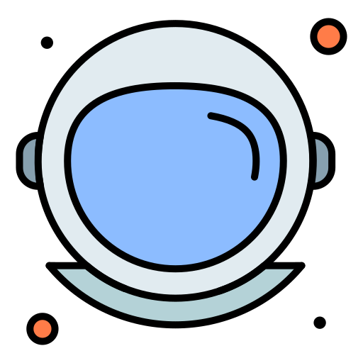

Josielen Rubin
Desenvolvedora Frontend Júnior
- 
-

Sobre
Oi! Meu nome é Josielen Rubin, seja bem-vinde!
Sou uma pessoa apaixonada por tecnologia. Nunca imaginei transformar isso em profissão, mas tenho me interessado cada vez mais pela área do frontend e todas suas possibilidades. Amo passar tempo assistindo ou jogando games, principalmente FPS. Tenho facilidade em adaptação e adoro novos desafios.